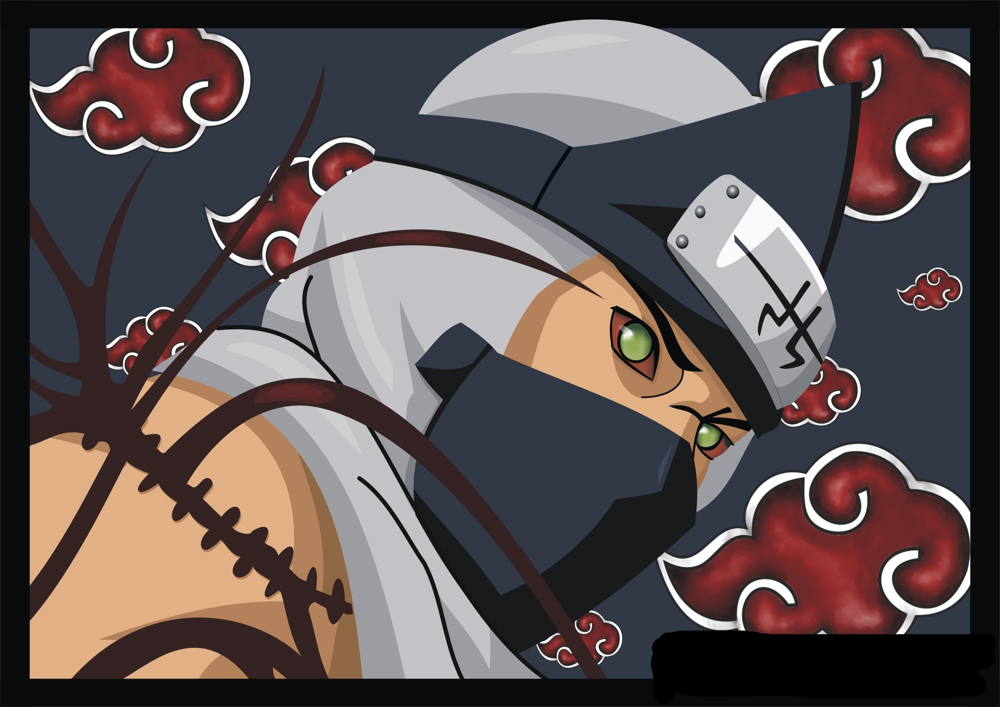

KAKUZU
When under the servitude of Takigakure as an elite ninja, Kakuzu took on a mission to assassinate Hashirama Senju, the First Hokage. This mission, however, ended in failure against the God of Shinobi. Despite the insurmountable danger faced on the mission, what awaited his return to his village was the stigma and harsh punishment associated with the failure of his objective. In response to this treatment, a wrong levied against a shinobi who had put life and limb on the line for his village, Kakuzu came to hold a violent hatred for Takigakure as he escaped from imprisonment. In his flight from the village, Kakuzu killed the village elders, took their hearts, and fled with knowledge of the village's most prized forbidden techniques. He made a living off bounty hunting on the black market, and tearing out the still-beating hearts of powerful shinobi to extend his own lifespan and arsenal.At some time in the past, he apparently encountered the Gold and Silver Brothers and witnessed Kinkaku's jinchūriki transformation. Know more |
|